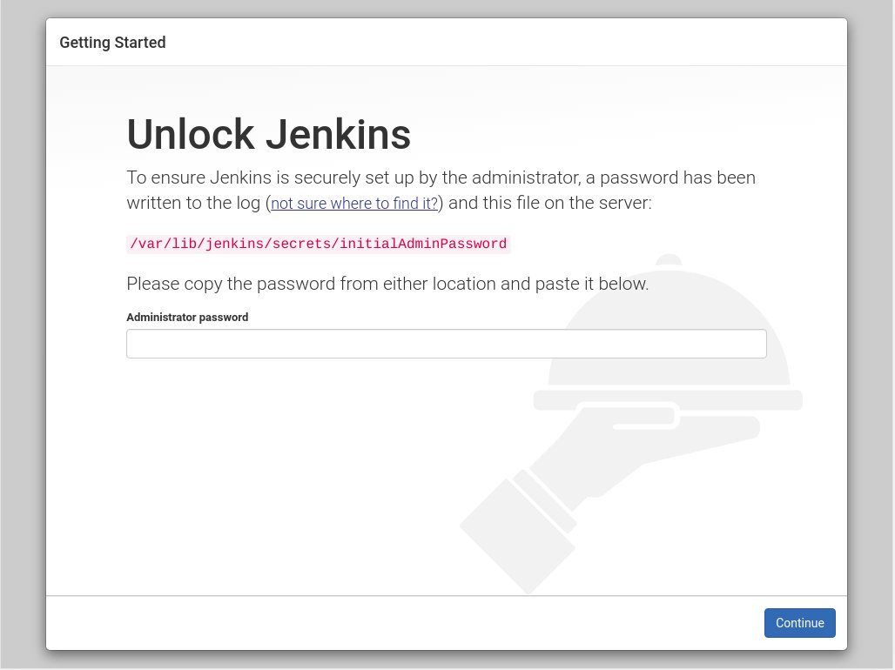
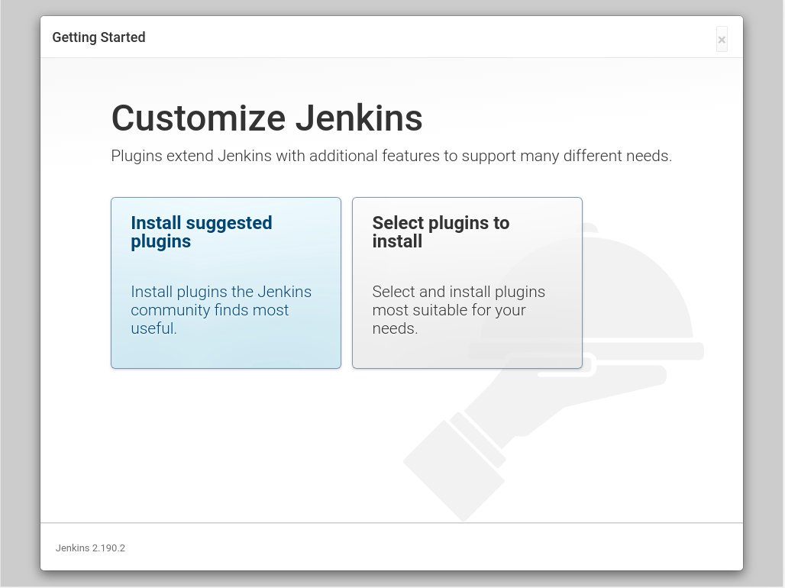
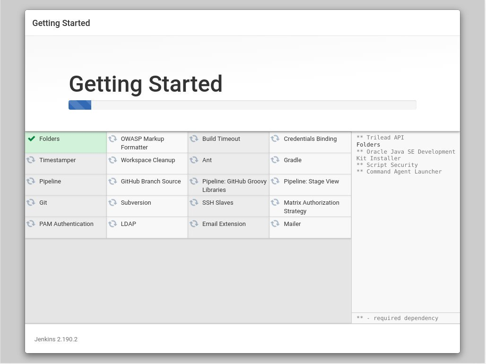
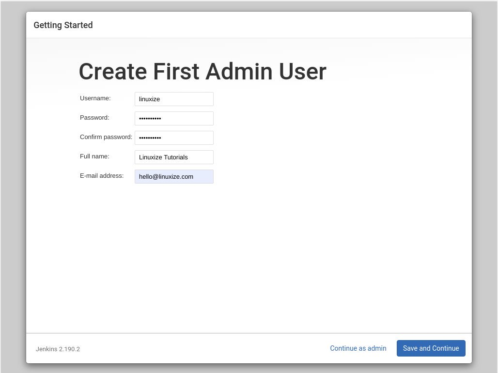
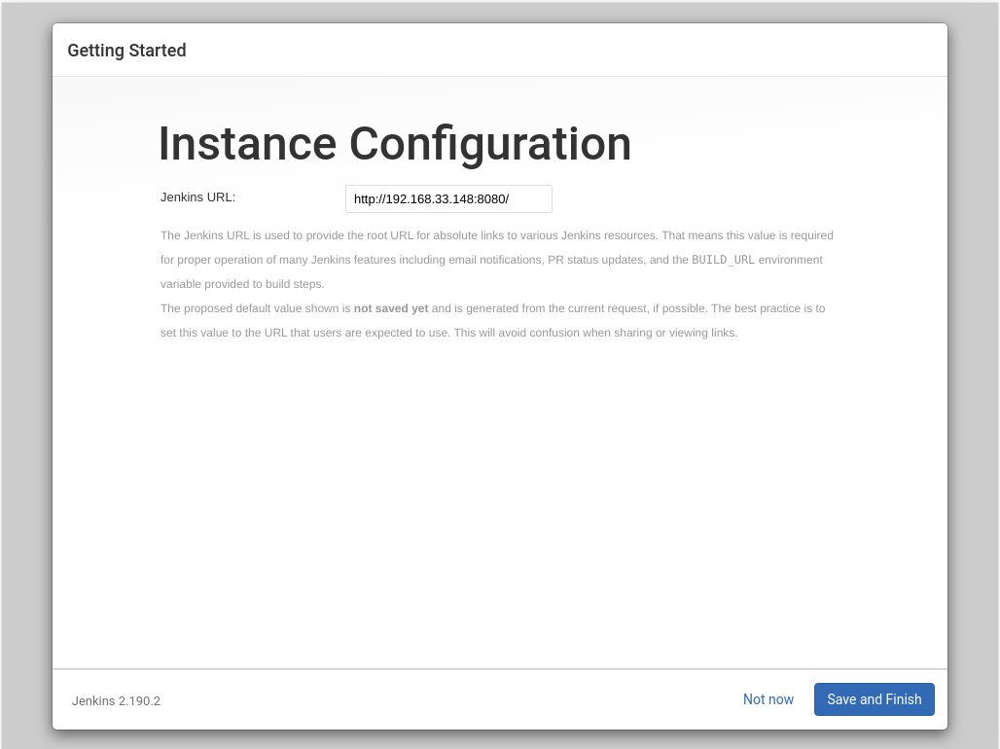
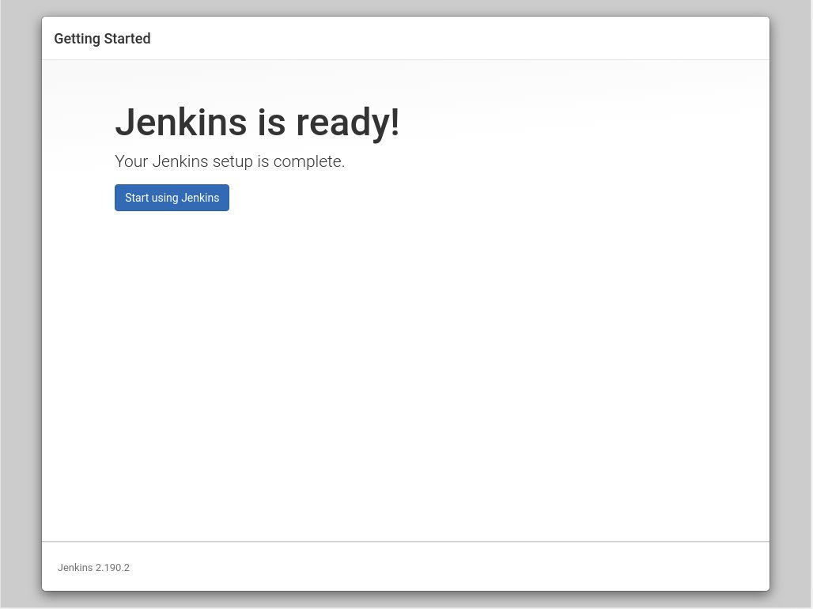
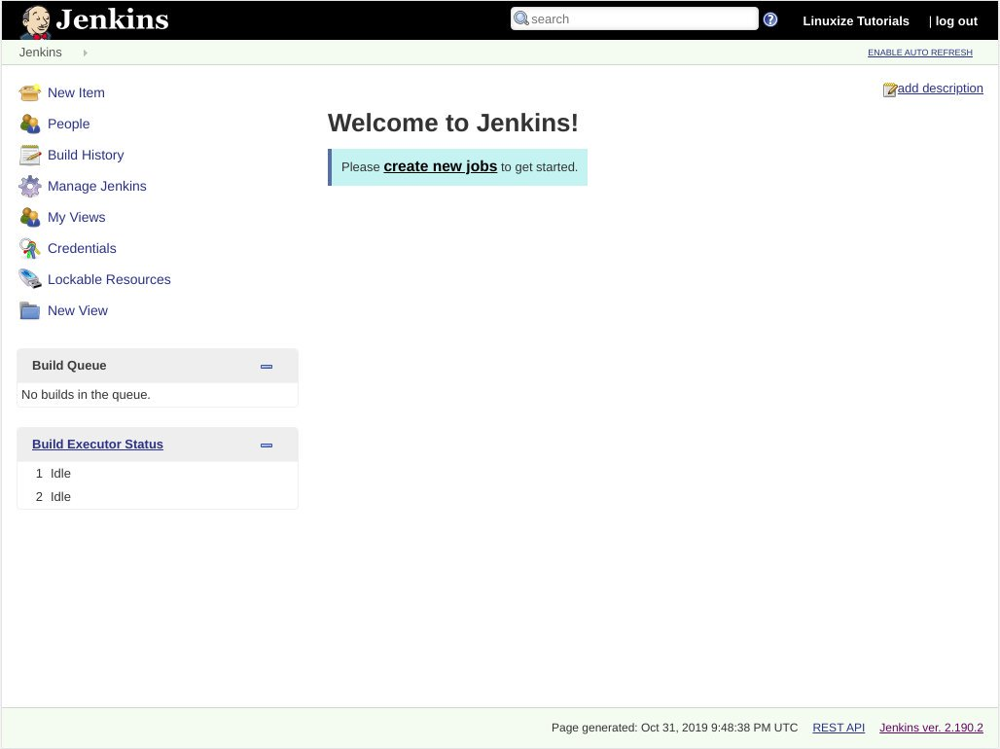

在 Debian 10 Linux 上安装 Jenkins
在本教程中，我们将介绍如何从官方 Jenkins 存储库在 Debian 10 Buster 上安装 Jenkins 。
Jenkins 是一个开源自动化服务器，它提供了一种简单的方法来建立持续集成和持续交付 (CI/CD) 管道。
持续集成 (CI) 是 DevOps 的一种实践，团队成员定期将其代码更改提交到版本控制存储库，然后运行自动构建和测试。持续交付 (CD) 是一系列实践，其中，代码更改会自动生成，测试并部署到生产中。
安装 Jenkins
以 root 或具有 sudo 特权的用户执行以下步骤，以在 Debian 10 上安装 Jenkins ：
- Jenkins 用 Java 编写，因此第一步是安装 Java 。为此，请更新软件包索引并使用以下命令安装 OpenJDK 11 软件包：
```bash
sudo apt update
sudo apt install default-jdk
```
Java 8 LTS 版本在官方的 Debian Buster 存储库中不可用。如果要使用 Java 8 运行 Jenkins ，请参阅[此安装指南](/linux/install-java-on-debian-9/)。
-
使用
wget下载和导入 Jenkins 库 GPG 键：wget -q -O - https://pkg.jenkins.io/debian/jenkins.io.key | sudo apt-key add -该命令应返回
OK，这意味着密钥已成功导入，并且该存储库中的软件包将被视为受信任的软件包。运行以下命令以将 Jenkins 存储库添加到您的系统：
sudo sh -c 'echo deb http://pkg.jenkins.io/debian-stable binary/ > /etc/apt/sources.list.d/jenkins.list' -
更新
apt软件包列表并安装最新版本的 Jenkins ：sudo apt update sudo apt install jenkins -
通过执行以下命令来启用并启动 Jenkins 服务：
sudo systemctl enable --now jenkins
设置 Jenkins
要启动安装过程，打开浏览器，输入您的域名或 IP 地址，后跟端口 8080 ， http://your_ip_or_domain:8080 。
将显示类似于以下的屏幕：

在安装过程中， Jenkins 安装程序会创建一个初始的 32 个字符长的字母数字密码。要查找密码，请输入下面命令：
sudo cat /var/lib/jenkins/secrets/initialAdminPassword
5a541fac8f094f8db4155e11117f927a
复制密码，将其粘贴到管理员密码字段，然后单击确定 Continue 。

在下一个屏幕上，安装向导将询问您是要安装建议的插件还是要选择特定的插件。单击该 Install suggested plugins 框，安装过程将立即开始。

接下来，系统将提示您设置第一个管理员用户。填写所需的信息，然后单击确定 Save and Continue 。

下一页将要求您设置 Jenkins 实例的 URL 。该字段将填充一个自动生成的 URL 。

单击 Save and Finish 按钮确认 URL ，设置过程将完成。

单击 Start using Jenkins 按钮，您将被重定向到以您在前面的步骤之一中创建的 admin 用户身份登录的 Jenkins 仪表板。

至此，您已经在系统上成功安装了 Jenkins 。
结论
在本教程中，您学习了如何在 Debian 系统上安装和完成 Jenkins 的初始配置。现在，您可以访问 Jenkins 官方文档页面，并开始探索 Jenkins 的工作流程和插件模型。